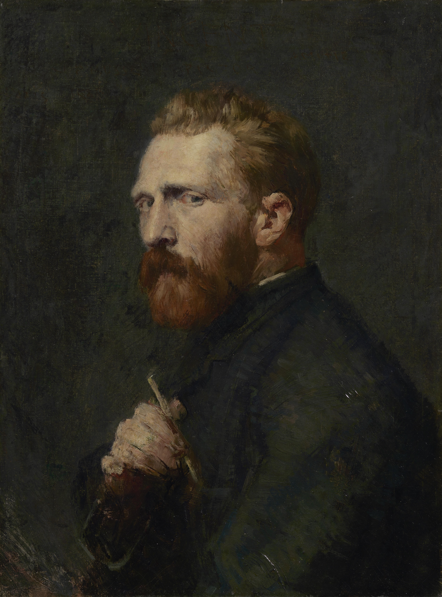

Vincent van Gogh

Vincent van Gogh was a Dutch painter known for his expressive use of color and energetic brushwork. His artworks became some of the most recognizable paintings in the history of modern art.
View Vincent van Gogh's artworks